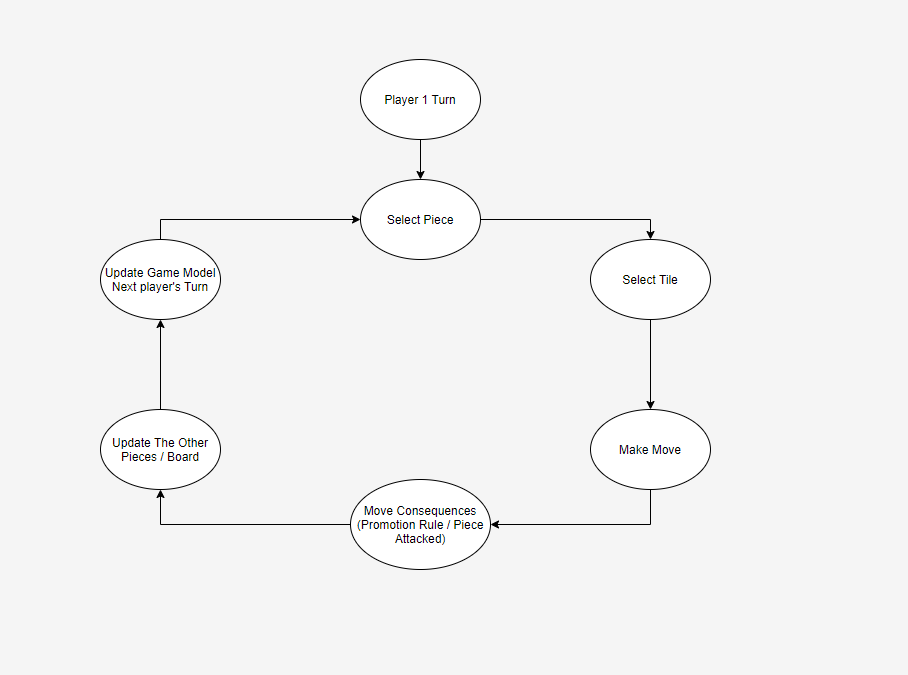
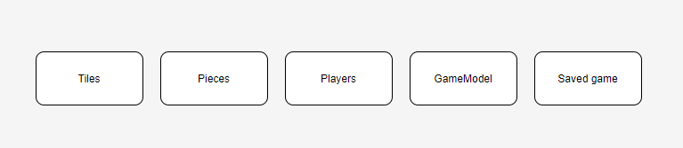
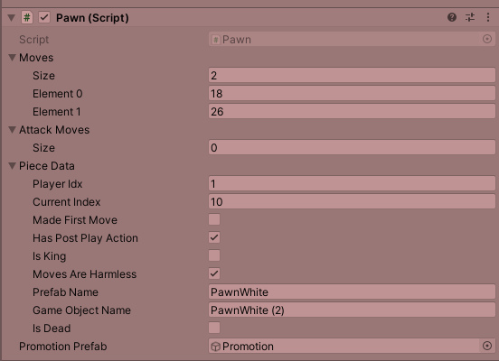
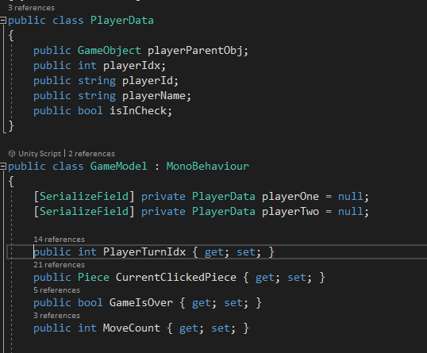

Making Of Chess
Intro
Chess is a popular board game. Implementing it in Unity is a great way to continue improving as a game developer. In this article I'll focus on the unique topics related to making a board game and specifically, Chess.
structure
Game loop
Board games consist of several players playing together. Every player makes his/her move when it's his/her turn. The game ends when a move is made that sets the player as the winner. The BoardController is in charge of the managing the flow of the game. In more complicated board games, the game is subtracted to different states in a state machine and the controller handles the interactions between the states. Here I had no need for this encapsulation and the The BoardController controls the game flow with the help of the GameModel. 
Game Managment
The game consists of many resources and data that need to be managed and interact with each other.  1. Tiles - Game board: The tiles can be created dynamically on game start or the game can already have them as part of it. The pros and cons are mainly regarding the time it takes to create them vs the affect of their weight on the size of your app in the store. Since the board is always loaded and part of our game both options are good but I chose to create them dynamically because createing 64 tiles ahead of time is a lot of work. The TilesMap is in charge of creating all the tiles and managing their data. Every tile holds the player on it - if it's not empty and color manipulation values. 2. Pieces: All pieces inherit from an abstract Piece class. The main difference between the pieces in chess is their possible moves, so each sub-class must implement its own SetMoves(). There are 3 main ways of connecting the piece to the tile it's on: a. The tile has a pointer to the piece that's on it / The piece has a pointer to the tile it's on. b. We store the tiles in an array in a way that we hold a mapping from a piece's position on the board to the tile it's on. c. Every piece saves the index of the tile it's on. I went for the third option since I didn't want to expose pointers between a piece and a tile. The second option was more complicated then the third option, and I prefer holding up-to-date data then re-calculating it here. Every tile didn't need to know the piece on it, only if a piece was on it and the player on it. Clickability of a piece could have been handled by every piece with OnMouseDown(), and then it could've updated the BoardController with the currently selected piece. I preferred moving all the input handling to the BoardController, but it could've been in an InputHandler class but in this case it was overkill. Every piece has a box collider and all the pieces are in the same layer so the BoardController can ray cast for this layer only on every mouse click.  3. Players: The amount of players in Chess is 2, other board games might enable choosing the number of players at the start so I can statically create my 2 players. Every player Holds: id, name and a pointer to all it's pieces. For simplicity reasons I managed the 2 player's data in the GameModel. 4. GameModel: In order for the BoardController to control the flow of the game, we need to hold up-to-play data of the game: a. Whose turn it is. b. Is the game over. c. Is a move in progress. d. Is a player in check / checkmate. e. The currently selected piece. The GameModel Handles all this Game data and creates and contains the players data.  5. Saved Game: Saving a game state, includes saving the all the piece's data and the current turn and loading it on demand. 5.1 Saving: We can save all this data to server or to a local file. I chose to a local file since it's simpler but the better solution would be to a server so when moving between devices you don't lose your saved game and it's more secure. I only supported saving the last saved game but in the same way we can save many games. 5.1 Loading: We can only load a saved game from in-game. Since we only saved the pieces data and not the actual pieces, we need to update the data of the current pieces. If a piece was saved but doesn't exist in the current game then we need to create it (from the Promotion Rule).
Simulations
Problem: In Chess we need to simulate if a move will put my king in check or if my move can save the king from a current state of check. Solution 1: Before we make any move simulate my moves and validate them for my king's check status. Solution 2: Hold extra data on every piece, if it's potentially threatening the opposing player's king, manage all these potential threats and actual threats and validate your moves vs them. Main con for solution 1 is that you need to have the moves of all your players updated on every simulation and every piece needs to be simulated before it moves and this is CPU expensive. Solution 2 is an attempt to reduce the calculations by validating against the threating pieces of the opponenet and not all his pieces, since we only have max 16 pieces that can threaten and each with a limited amount of moves I've not attempted solution 2.